Building intelligent
digital products.
The identity of Zirven, a technology and software company, and the parent brand of VEVO and every Zirven product to come.
Brand overview
Zirven is a technology and software company. We create, own and keep improving digital products, and we build custom software for partners.
For businesses ready to move forward, Zirven builds intelligent digital products: SaaS platforms, AI-powered business software, and web and mobile applications. They are engineered as products, owned for the long term and improved with every release.
What we build
- SaaS products: multi-tenant platforms we own and operate
- AI-powered business software: assistants, extraction, decision support
- Web and mobile applications
- Automation, APIs and integrations
- Data, analytics and cloud platforms
- Enterprise and custom software (Zirven Solutions)
Who it is for
- Business leaders who need software that runs operations, not slides about it
- Teams who use our products every day
- Developers and partners who integrate with our APIs
- Talent who want to build serious products
- Investors who back a product company with a platform
The name
Zirve is Turkish for summit. For Zirven the summit is not a finish line. It stands for progress, for solving difficult problems, for reaching the next level and for products that keep evolving. Every release starts from the height the last one reached.
Zirven is · Zirven is not
| Zirven is | Zirven is not |
|---|---|
| A product company that builds and owns software | An outsourcing agency that only rents out developers |
| The parent brand of VEVO and future products | A single app, or a brand tied to one product |
| A B2B technology company with an international audience | A consumer marketplace or a brand for one local community |
| Engineering-led, measured and specific | "AI-powered everything", hype or vague futurism |
Primary line & descriptor
Building intelligent digital products.
Software · SaaS · AI
Akıllı dijital ürünler geliştiriyoruz.
Yazılım · SaaS · Yapay Zekâ
نبني منتجات رقمية ذكية
برمجيات · منصات سحابية · ذكاء اصطناعي
Tagline exploration
Building intelligent digital products.Says exactly what Zirven does, in the active voice. "Building" signals continuous work. Works as a homepage headline, a signature line and a boilerplate opener.
Software for the next level.The summit idea in four words. For campaigns, events and recruiting, never alone on first contact, because it does not say what we make.
Intelligent products. Built to last.Product ownership and quality. Good for enterprise sales material.
We build what businesses run on.Confident and concrete. Becomes true as the portfolio grows, so hold it until there are two or more products in market.
Engineered to climb.Clever but abstract. It needs explaining and could suit any company.
Revolutionizing the future · Innovating tomorrow · Next-generation solutions · AI-powered everythingGeneric hype. These lines could belong to anyone and promise nothing specific. Never use them.
About V2.1
V2.1 defines Zirven as a technology and software company and the parent brand of a product portfolio. It keeps V2's visual craft: the Summit Z, the purple palette, Readex Pro, the contour pattern and the token and SVG production system. It retires V2's consumer positioning, its taglines, its warm accent colour and its consumer interface concepts. That earlier concept could return one day as a separate product under Zirven, but it is not the corporate identity.
Brand personality
Zirven sounds and looks like the senior engineer in the room: calm, precise, ambitious and easy to understand.
| Trait | This means | Not this |
|---|---|---|
| Intelligent | We explain how things work and why they matter. | Jargon used to sound clever |
| Confident | Short, declarative sentences. We state what our software does. | Superlatives, exclamation marks, "best-in-class" |
| Technically credible | Real numbers, real interfaces, named protocols and standards. | Vague claims like "powered by AI" |
| Modern | Current product language and clean interfaces. Dark-first. | Trend chasing, crypto or sci-fi styling |
| International | Plain English that translates cleanly into Turkish and Arabic. | Idioms, puns, locale-specific jokes |
| Clear | One idea per sentence, active voice, concrete nouns. | Buzzword chains, passive voice |
| Product-focused | Show the product. Talk about outcomes users can see. | Abstract "solutions", stock imagery |
| Ambitious, without exaggeration | We aim high and say so plainly: "the next level". | "Revolutionizing", "changing the world" |
Where we sit
Creative direction
The big idea: the next level. A summit is a point you reach and then build from. Every Zirven product release climbs from the last.
1 · One angle, used with precision
The 20° ramp of the Summit Z is the only geometric motif: in the overline marker, the ascent lines, the summit cut and the way product windows step up a layout.
2 · The product is the hero
Show real interfaces, real data and real workflows, built with the design system. They prove that we build software. Mock-ups beat metaphors.
3 · A dark stage with violet light
Zirven Night is the stage. Violet and Electric Purple are the light on it. Light surfaces (Snow) are used for documents, print and long reading.
4 · Restraint, with one signal
Intelligence Cyan appears only where intelligence or live data is at work: an AI answer, a live sync, an active node. It makes up less than 5% of any layout.
5 · Systems, not ornaments
The supporting graphics show how software works: contour data terrain, module grids, layered platforms and connected nodes.
6 · Calm density
Interfaces are information-rich but quiet. Use hairlines instead of heavy boxes, tabular numbers, generous gutters and an 8 px rhythm.
The summit, reinterpreted
Progress
Steady, measured climbs, never jumps.
Hard problems
We pick the difficult route on purpose.
The next level
Every version stands on the last one.
Connected systems
Products, modules and data that work together.
Always avoid
Brand architecture
An endorsed model. Zirven is the master brand. Products have their own names and glyphs and always carry the Zirven endorsement.

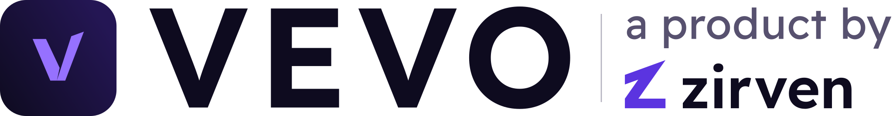
Endorsement rules
- Product lockup: product tile + name | "a product by" + Zirven logo.
- Product websites end with "VEVO is a product by Zirven".
- App stores and contracts list Zirven Technology as publisher.
- The Zirven logo never contains a product glyph, and a product never uses the Summit Z.
Naming products
- Short (4–6 letters), easy to say in EN, TR and AR.
- No "Zirven" or "Z-" prefix, so the portfolio can grow freely.
- Features take descriptive names: [Product] + plain noun.
- Clear trademarks in classes 9, 35 and 42 before launch.
Product family system
- Every product icon uses the Zirven tile: a rounded square (22.5% radius) on Night or Deep Violet.
- Products are told apart by glyph and name, not by new colours.
- Every product uses the Zirven UI system, tokens and Readex Pro.
- Cyan stays reserved for AI and live data in every product.
The Summit Z
A capital Z drawn as a climb, a summit and a solid base. One shape that is a letter, a direction and a promise to keep moving up.
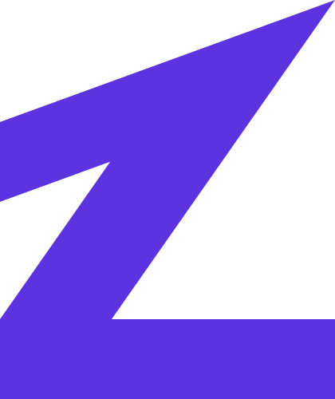
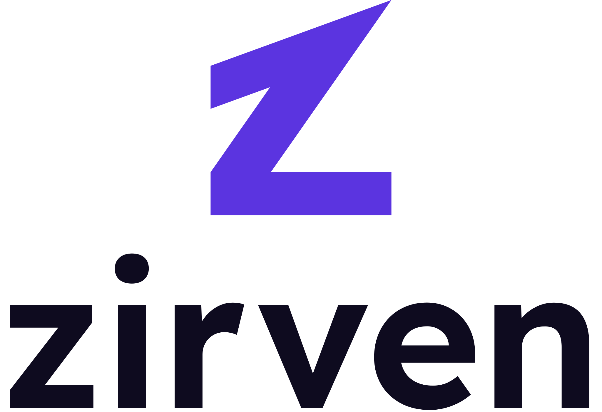
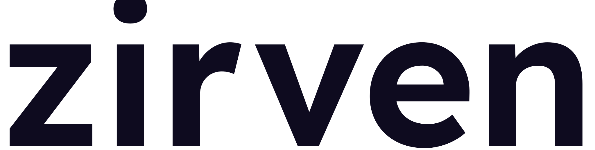
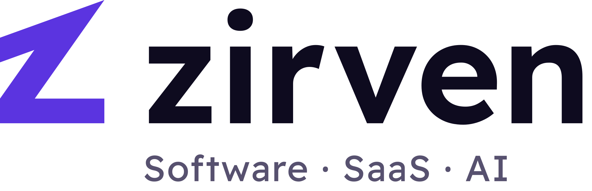
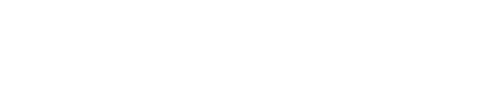
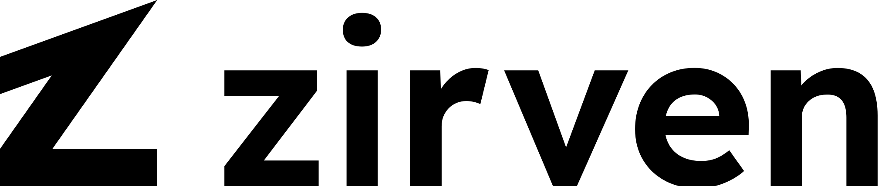
Reading the mark. The ramp climbs at 20°, the steady progress of a product getting better. It reaches an acute summit, the next level. The descent drops at 55° to a solid base, the platform everything is built on. The wordmark is set in lowercase Readex Pro SemiBold, outlined, so the capital Z of the symbol is never repeated.
Construction
Every logo file is generated from a few numbers in scripts/build_brand.py. Nobody redraws it by hand.
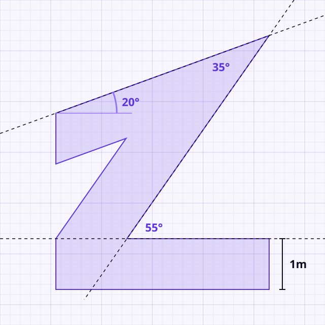
- Artboard
- 64 units. Symbol bounding box 42 × 50.
- Module m
- 10 units, the height of the base bar.
- Ramp
- 20°, vertical thickness 1m.
- Summit
- 35° interior angle.
- Descent
- 55° (= 20° + 35°), 11.5 units measured perpendicular.
- Micro master
- Used at 24 px and below. Ramp 8.4, descent 57°, base snapped to 2 px at 16 px.
- Lockup
- Symbol height = 1.62 × x-height of the wordmark. Gap = 0.30 × symbol height. The symbol sits on the baseline.
- Wordmark
- "zirven", Readex Pro weight 600, tracking −6/1000, outlined from the font with HarfBuzz.
Lockups & languages
One international master brand, fully usable in Turkish and Arabic. Use English by default. Use Turkish and Arabic lockups where the audience reads those languages.
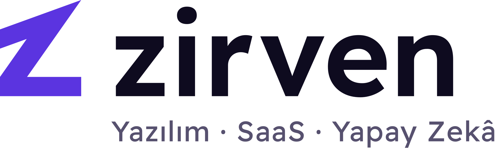
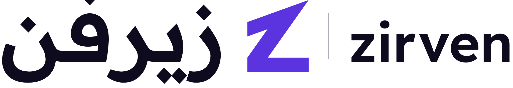
Writing the name
- Running text: Zirven (capital Z).
- Legal: Zirven Technology / Zirven Teknoloji.
- Never ZIRVEN in Turkish capitals. If capitals are unavoidable, write ZİRVEN with the dotted İ.
Why lowercase
Turkish has two letters i: dotted (i/İ) and dotless (ı/I). In capitals, ZIRVEN reads as "Zırven" in Turkish. The lowercase wordmark reads correctly everywhere, in every market.
Arabic
زيرفن is set in Readex Pro Arabic, weight 560, and outlined. In RTL layouts the symbol sits on the right and the 20° ramp is not mirrored: the symbol is a letterform, not an arrow.
Clear space
Keep at least 2m clear on every side, where m is the height of the symbol's base bar (1/5 of the symbol height).
For the symbol alone, use the same 2m. On app icons and favicons the tile itself provides the clear space.
Minimum sizes
Below these sizes the logo loses detail. At 24 px and smaller, always use the micro master.
(micro master)
Misuse
Use only the supplied files. The logo is a fixed artwork.
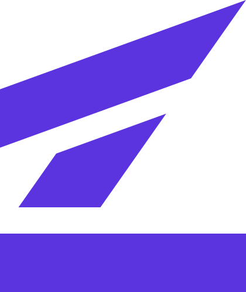
Colour
A deep violet foundation with one cool signal. Every colour has a job. If a colour has no job, leave it out.
Primary dark surface. The stage for the brand and the product UI.
Depth layers, app-icon gradient start, raised dark panels.
Primary brand colour: symbol on light, primary actions and links on light.
Accent on dark: symbol on dark, focus, active states, chart series 1.
Soft accent: secondary text on dark, tints, pattern lines.
Light surface for documents and print. Text on dark.
Restricted: AI activity and live data only, under 5% of any surface. On light, use Cyan Ink #0A7A88.
The corporate identity has no warm accent. Errors in product UI use the functional red.
Proportion
Accessible pairings (WCAG 2.2)
| Text | Background | Ratio | Use |
|---|---|---|---|
| Snow | Night | 18.0 : 1 | AAA Body text on dark |
| Lavender | Night | 12.4 : 1 | AAA Secondary text on dark |
| Electric Purple | Night | 5.6 : 1 | AA Links and accents on dark |
| Intelligence Cyan | Night | 11.2 : 1 | AAA AI labels on dark |
| White | Zirven Violet | 7.0 : 1 | AAA Primary buttons on light |
| Zirven Violet | White | 7.0 : 1 | AAA Links on light |
| Cyan Ink | White | 5.1 : 1 | AA AI labels on light |
| White | Electric Purple | 3.4 : 1 | Fail Use Night text on Electric Purple instead |
| Zirven Violet | Night | 2.8 : 1 | Fail Use Electric Purple on dark |
CMYK values are straight screen conversions. Print colours must be matched on a press proof: start from the Pantone 2725 C–2735 C range for Zirven Violet and print Night as a rich violet-black.
Typography
Readex Pro is kept from V2: one variable family (weights 160–700) designed for both Latin and Arabic. JetBrains Mono is added for code and data on developer surfaces.
Building intelligent digital products.
Akıllı dijital ürünler geliştiriyoruz: ğ ü ş ı ö ç
نبني منتجات رقمية ذكية
POST /v1/workflows/{id}/runs
run_7Hq2kV9 · 142 ms · 200 OK
Scale
72 / 1.02 · 600 · −2.5%44 / 1.1 · 600 · −1.8%34 / 1.15 · 600 · −1.2%24 / 1.25 · 60018 / 1.6 · 40016 / 1.6 · 40012 · 600 · +14% · caps13.5 / 1.6 · JetBrains MonoRules
- Headings 600, body 400, light 300 only for display contrast.
- Use sentence case in every language.
- Use tabular numbers in UI and data.
Arabic
- Same family. Set Arabic 1–2 px larger, line-height 1.7–1.8.
- Mirror the layout, not the symbol.
- Never letter-space Arabic.
Fallbacks
- Email and Office: Segoe UI / system-ui.
- Arabic: Noto Sans Arabic.
- Code: ui-monospace, Menlo, Consolas.
Iconography
One technology icon family for the company, the website and every product. These replace V2's consumer icon set entirely.
- Grid
- 24 × 24 px with a 2 px safe area (dashed line).
- Stroke
- 1.75 px, round caps and joins, corner radius 1.6–2.5 px.
- Fill
- Outline only. One small solid accent is allowed (Products tile, the AI spark centre).
- AI
- A sharp four-point spark built on straight edges, never a brain, robot or glowing orb.
- Sizes
- 16 / 20 / 24 / 32 px. Icons scale as vectors and the stroke stays 1.75 at 24 px.
- Files
- icons/svg/*.svg, sprite icons/zirven-icons.svg, injector assets/js/zirven-icons.js. A further 36 UI utility icons follow the same rules.
Pattern & graphic devices
V2's summit contour pattern stays, re-read as data terrain: elevation lines that are also a field of data. Three supporting devices complete the system.
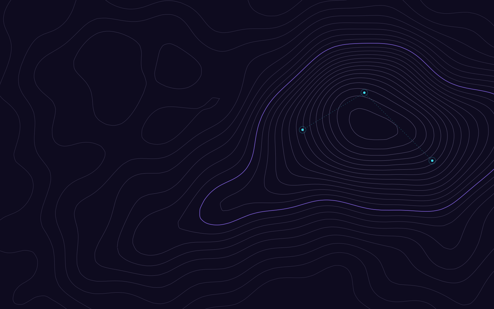
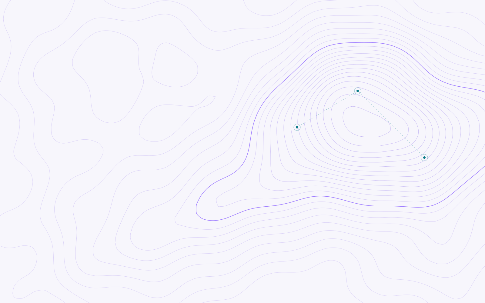
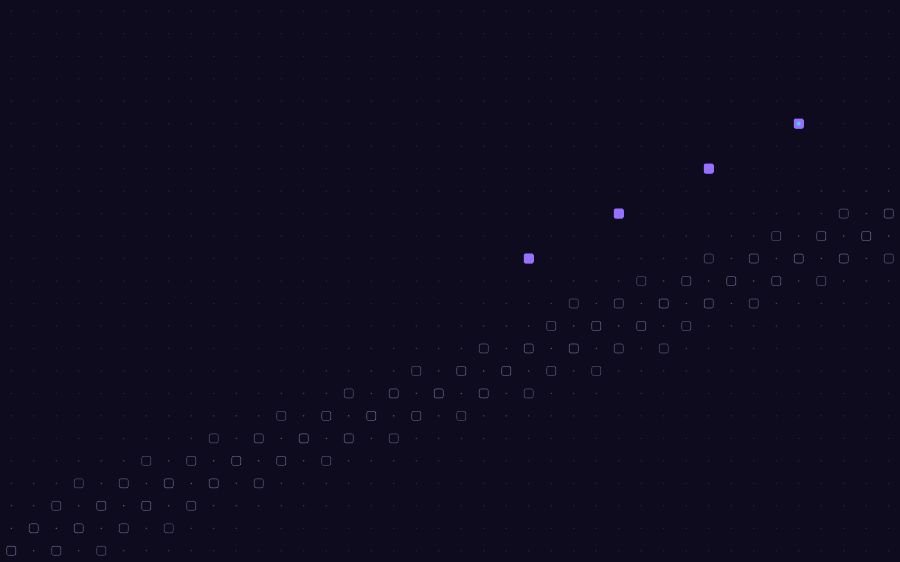
Ascent lines
Parallel lines at 20°. Use them for glass manifestation, section backgrounds and signage bands.
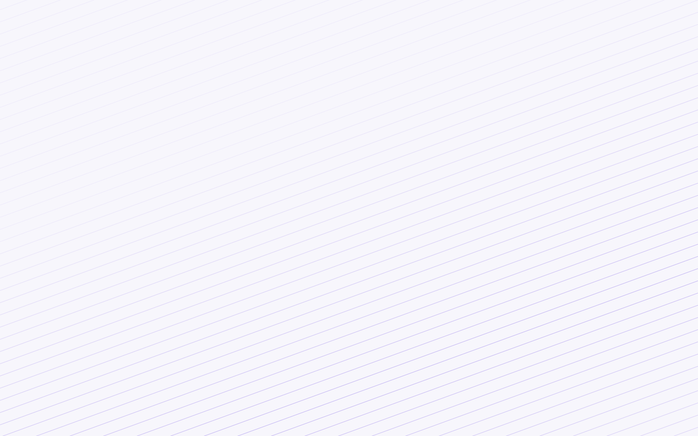
Summit marker
A short rule climbing at 20° before every overline. It is the smallest brand signature.
What we build
Summit cut
A 20° chamfer on one top-right corner of a hero card or a slide. Use it at most once per layout.
Patterns stay quiet: line opacity 10–35%, never behind body text, and never more than one pattern per layout.
Favicon & app icon
A rounded tile (22.5% radius) holds the Summit Z. The tile is the shared shape of the whole product family.
Future product slot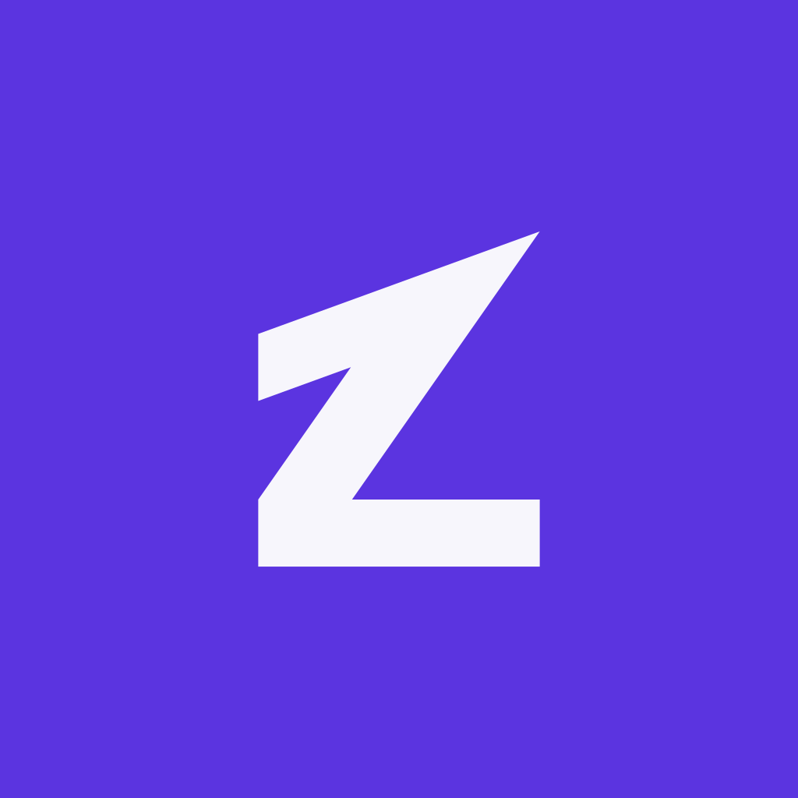
Maskable / Apple touch 48
48 32
32 1616 px · 6× zoom
1616 px · 6× zoom| File | Size | Use |
|---|---|---|
| favicon/favicon.svg · favicon.ico | vector · 16/32/48 | Browser tabs (micro master, flat Violet tile) |
| favicon/apple-touch-icon.png | 180 | iOS home screen (full-bleed, iOS applies the mask) |
| favicon/icon-192.png · icon-512.png · maskable-512.png | 192 · 512 | PWA manifest (site.webmanifest) |
| favicon/app-icon.svg · app-icon-1024.png | 1024 | App stores, social avatars, GitHub organisation |
Imagery
Our imagery proves that we build software. The order of preference: the product itself, abstract system graphics, then photography of real people doing real work.
Photography direction
- Real teams in real workplaces: engineering reviews, whiteboards, operations floors, warehouses, clinics, offices.
- Natural light, honest moments, people focused on work, never looking at the camera.
- Architecture and engineering detail: precise lines, concrete, glass, steel.
- Grade: cool shadows lifted toward Deep Violet, true skin tones, low saturation.
- Diverse, international casting.
Never
- Robots, humanoid AI, brains, glowing orbs, "digital faces".
- Circuit boards, binary rain, holograms, crypto coins.
- Stock handshakes, pointing at screens, staged high fives.
- Food, retail or leisure scenes as brand imagery.
- Mountain-climbing photography used to illustrate "summit". The metaphor lives in the geometry.
Show AI through what it produces: an answer with sources, an automated step, a decision made faster. Never draw AI as a creature or a sphere.
UI design language
One interface system for every Zirven product. It is calm, dense where data needs it, dark-first, and readable in English, Turkish and Arabic.
Data first
Numbers and states lead. Chrome recedes into hairlines and surface steps.
One signal
Cyan marks AI and live data, nothing else. Users learn it once.
People in control
AI suggests, people approve. Actions that change data are always reviewable.
8 px rhythm
A 4 px sub-grid, a 248 px sidebar, 12-column web layouts with 24 px gutters.
Components (live, from assets/css/zirven.css)
Throughput rose 12.4% week over week. Two workflows need review. ops_daily.sql
AI patterns
- Cyan spark label on every AI-generated block.
- Sources are always cited (queries, files, records).
- "Requires approval" on actions that change data.
- Show progress steps, not spinners.
Data visualisation
- Series order: Electric, Lavender, ink-500, Deep Violet.
- Cyan only for AI forecasts or live series.
- Gridlines at 8% Lavender. Tabular numbers.
- Sequential scale: Deep Violet → Electric → Lavender.
Themes & motion
- Dark is the default for products. Light is available for documents and reports.
- Ease cubic-bezier(.2,.8,.2,1): 120 / 200 / 360 ms.
- Reveals climb 10 px along the ramp. Respect reduced motion.
Social media
On social, Zirven shows products, explains the engineering behind them and hires. Every post either shows something real or teaches something useful.
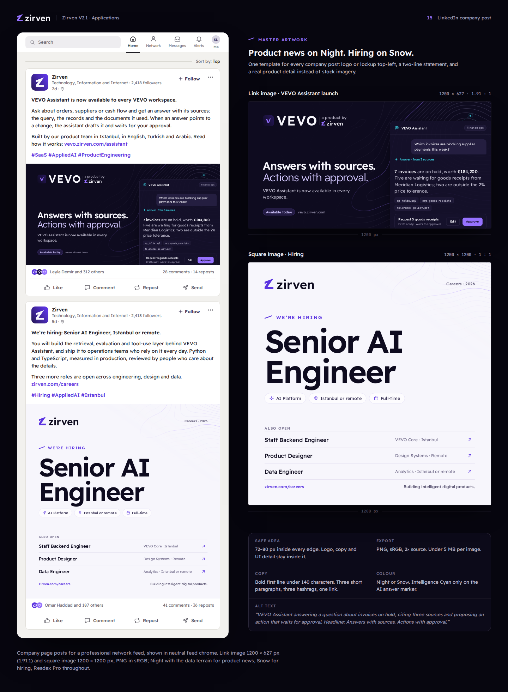
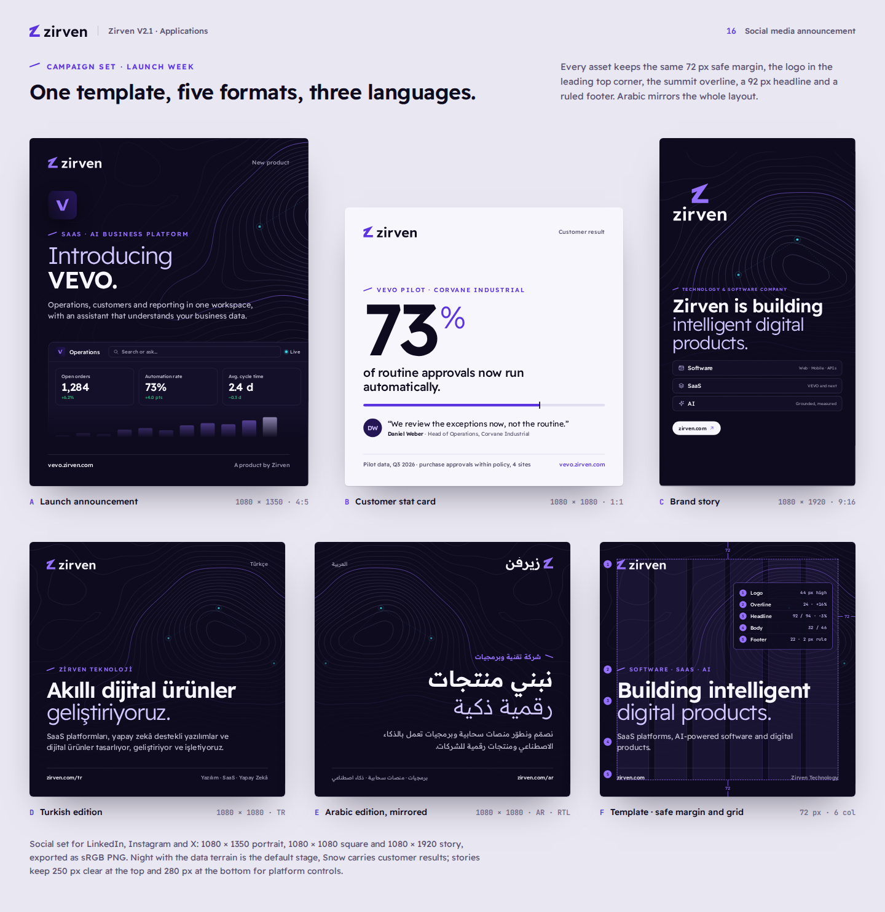
Content pillars
- Product: launches, releases, how features work.
- Engineering: architecture notes, AI evaluations, open source.
- People: hiring, team, how we work.
Templates
- Margins 72 px at 1080. The logo sits top-left or bottom-left.
- Every post has an overline with the summit marker.
- One message per asset, ≤ 12 words in the headline.
Profile
- Avatar: app icon tile. Cover: data terrain + primary line.
- Bio: "Building intelligent digital products. Software · SaaS · AI".
- Hashtags: #SaaS #AppliedAI #ProductEngineering, no more than three.
Print applications
Quiet, precise stationery on uncoated stock. Night and violet on paper, with the symbol foiled or spot-printed.
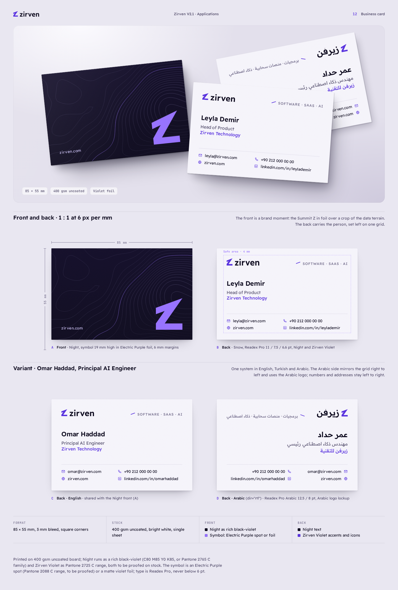
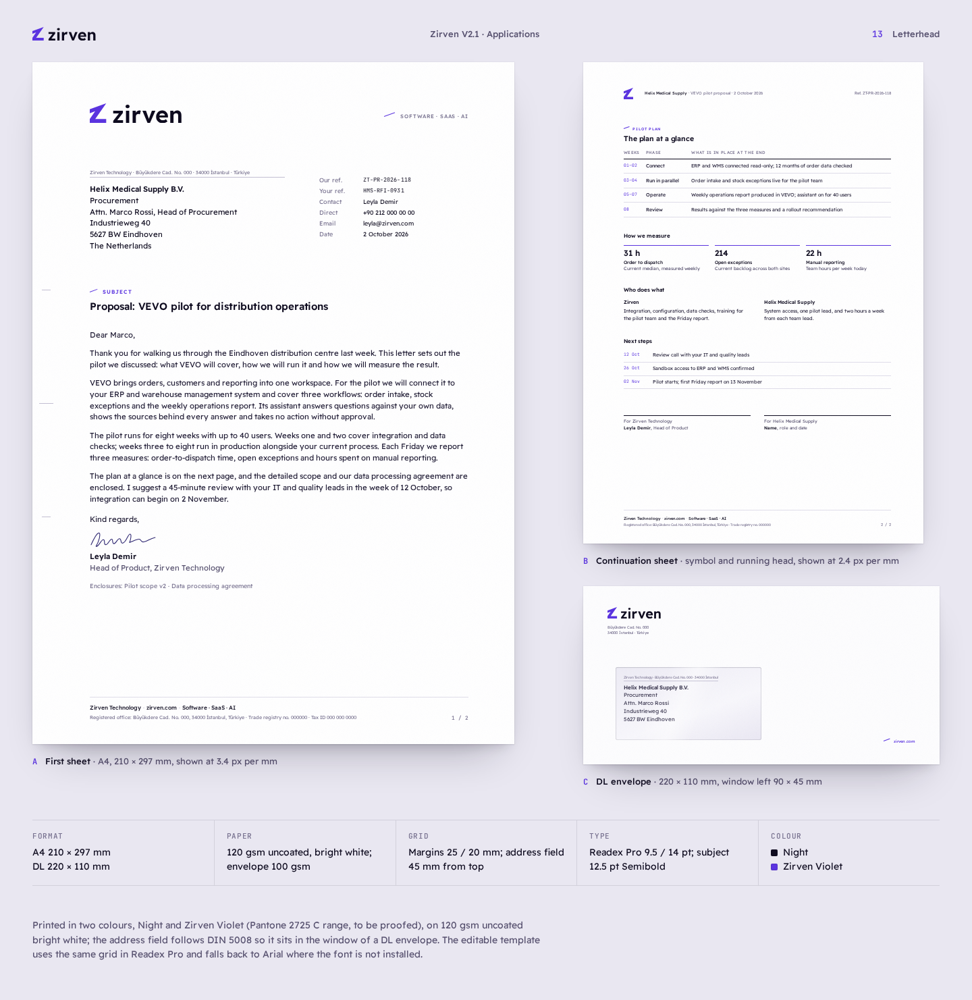

| Item | Format | Production |
|---|---|---|
| Business card | 85 × 55 mm | 400 gsm uncoated, Night flood front, symbol in Electric Purple spot or foil. No codes or stickers. |
| Letterhead | A4, 210 × 297 mm | 120 gsm uncoated. Logo 38 mm wide at 18 mm from top and left. Footer descriptor line. |
| Envelope | DL, 220 × 110 mm | Symbol on the flap, return address in Readex Pro 8 pt. |
| Signage | Reception wall, totem, blades, glass band | Dimensional symbol, edge-lit Electric Purple, 20° ascent-line manifestation. |
Digital applications
The corporate website, product interfaces, presentations and developer surfaces. Together they show a company that builds and owns serious software.

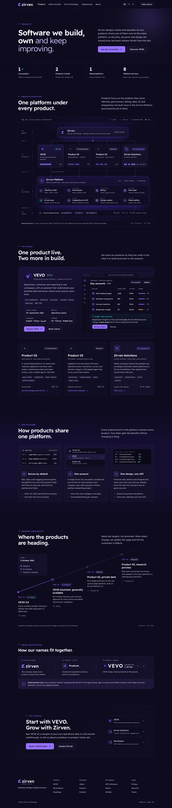
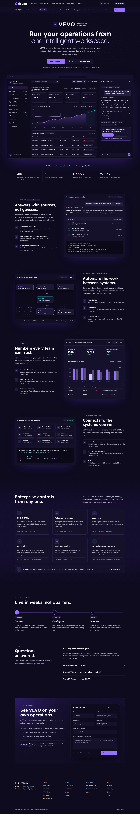


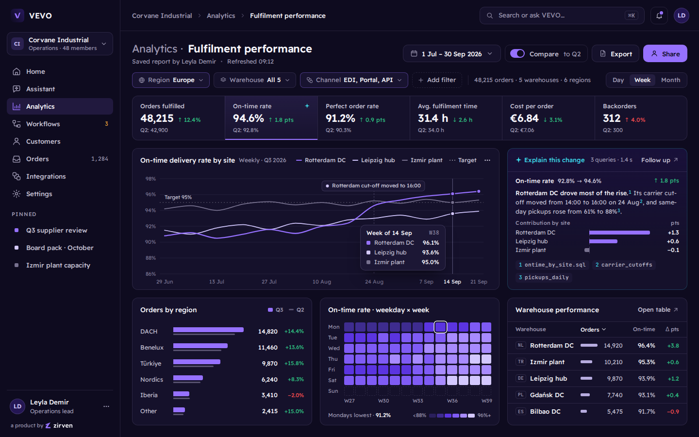
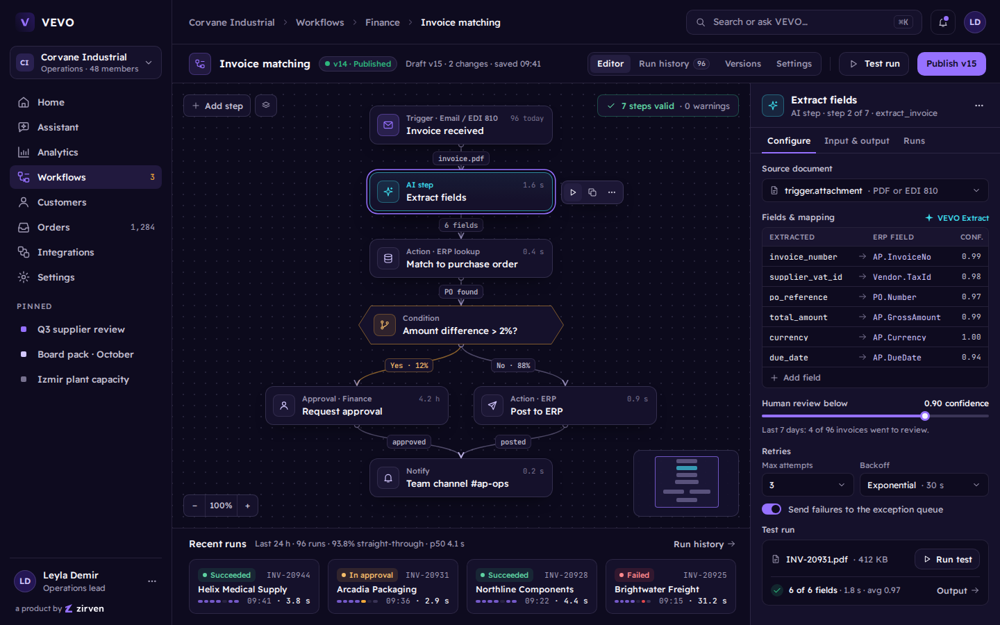


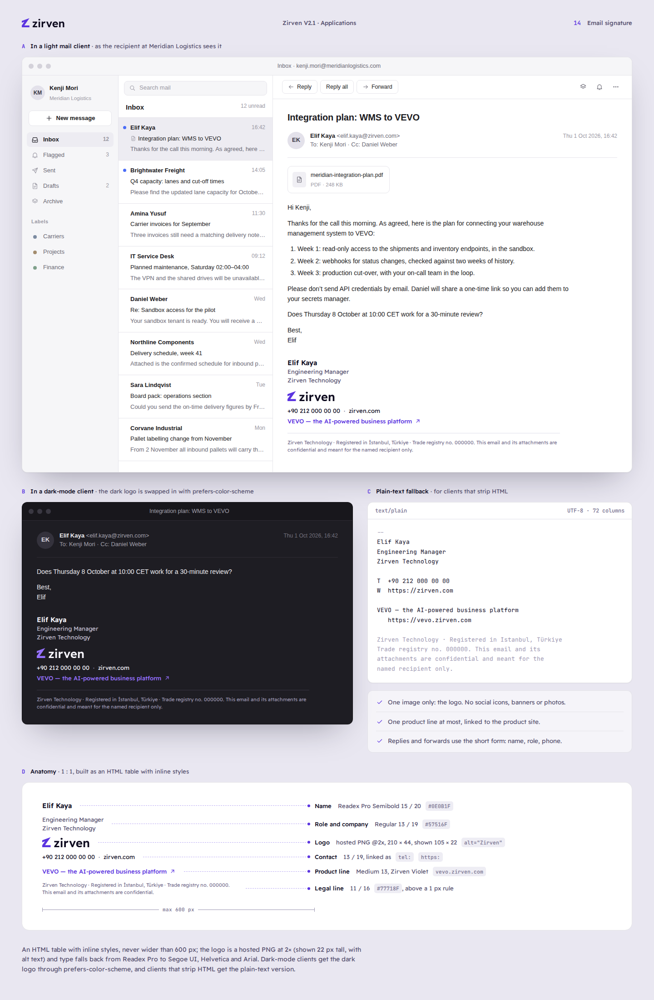
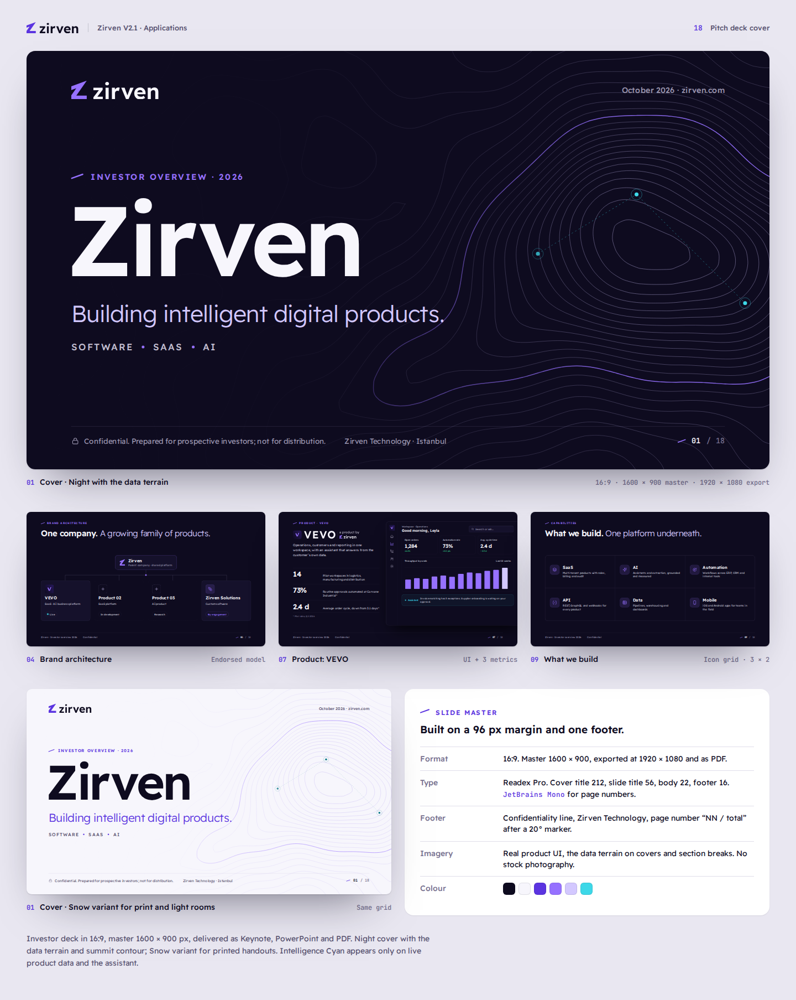
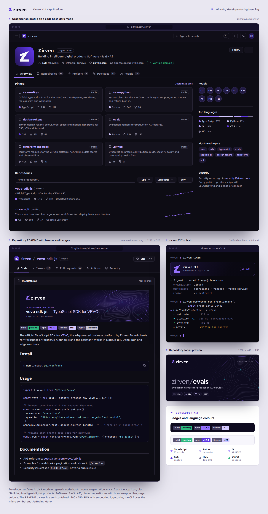
Design tokens
The same tokens drive the website, the products, these guidelines and the generated logo files. They are generated by scripts/build_brand.py: edit the script, never the outputs.
| Token | CSS variable | Value | Purpose |
|---|---|---|---|
| Night | --z-night | #0E0B1F | Dark surface / brand stage |
| Deep Violet | --z-deep-violet | #241654 | Depth, tile gradient |
| Zirven Violet | --z-violet | #5B34E0 | Brand, actions on light |
| Electric Purple | --z-electric | #9671FF | Accent on dark |
| Lavender | --z-lavender | #D3C8FF | Soft accent |
| Snow | --z-snow | #F7F6FC | Light surface |
| Intelligence Cyan | --z-cyan / --z-cyan-ink | #3DD8E8 / #0A7A88 | AI & live data only |
| Theme | --t-bg, --t-surface, --t-text, --t-accent, --t-signal … | light / dark | Semantic roles, switched by data-theme |
| Type | --z-text-h1 … --z-text-code | Readex Pro / JetBrains Mono | Scale (section 12) |
| Space | --z-space-1 … --z-space-32 | 4 → 128 px | 4 px base |
| Radius | --z-radius-xs … --z-radius-2xl, -tile | 4 → 28 px, 22.5% | Controls, cards, tiles |
| Motion | --z-ease-summit, --z-duration-* | cubic-bezier(.2,.8,.2,1) | All transitions |
| Geometry | --z-angle-summit-ramp / -angle / -descent | 20° / 35° / 55° | The summit angles |
/* tokens/tokens.css, tokens.json, _tokens.scss, tailwind.preset.cjs */ @import "tokens/tokens.css"; .ai-answer { color: var(--t-text); border-left: 2px solid var(--t-signal); } .cta { background: var(--t-accent); color: var(--t-accent-contrast); transition: background var(--z-duration-base) var(--z-ease-summit); }
Voice & messaging
Write the way a senior engineer explains a product to a smart customer: specific, calm and sure.
Write
- "VEVO answers questions about your operations, with sources."
- "Actions that change data wait for approval."
- "We build in short, measured steps."
- "API-first. SSO, roles and audit logs included."
Don't write
- "Revolutionizing business with next-generation AI."
- "Unleash the power of seamless synergy."
- "The future of everything, today."
- "World-class, cutting-edge, game-changing solutions."
Boilerplate
Zirven is a technology and software company that builds intelligent digital products. It creates and owns SaaS platforms, AI-powered business software, and web and mobile applications, including VEVO, the AI-powered business platform. Through Zirven Solutions it also builds custom software for partners. Software · SaaS · AI.
Zirven, akıllı dijital ürünler geliştiren bir teknoloji ve yazılım şirketidir. SaaS platformları, yapay zekâ destekli iş yazılımları, web ve mobil uygulamalar üretir ve bunların sahibidir; yapay zekâ destekli iş platformu VEVO bunlardan biridir. Zirven Solutions ile iş ortakları için özel yazılım da geliştirir.
زيرفن شركة تقنية وبرمجيات تبني منتجات رقمية ذكية. تطوّر الشركة وتمتلك منصات برمجيات كخدمة، وبرمجيات أعمال مدعومة بالذكاء الاصطناعي، وتطبيقات ويب وجوال، ومنها VEVO منصة الأعمال المدعومة بالذكاء الاصطناعي. ومن خلال Zirven Solutions تبني برمجيات مخصصة لشركائها.
Vocabulary
| Prefer | Instead of |
|---|---|
| build, ship, run, improve | revolutionize, disrupt, transform |
| products, platforms, software | solutions (alone, without saying what) |
| AI assistant, extraction, forecasting (specific) | "AI-powered" on everything |
| customers, teams, partners | users (in marketing), consumers |
| the next level, the next version | the future, tomorrow, next-generation |
Logo review (V2.1)
We tested the Summit Z again for a software company, against a modular and a layered alternative, at 16 to 64 px, as an app icon, in a website header and in monochrome.
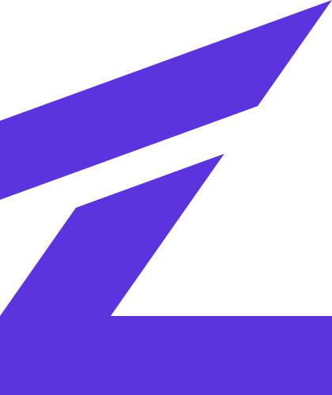
A is the strongest at 16 px, in monochrome and in the portfolio, and it is the easiest to remember. B's modules became the logo's motion. C's layers became the platform layer in architecture diagrams. Full comparison: logo/exploration/logo-review.html.
Files & production
Everything is generated, rendered and checked by scripts. Change the source, then rebuild.
| Folder | Contents |
|---|---|
| logo/svg · logo/png | Symbol, micro symbol, wordmark, horizontal, stacked, descriptor (EN/TR), Arabic, bilingual, endorsed VEVO lockups, in light, dark, black, white and violet |
| logo/exploration | Review candidates A/B/C, rasters, construction drawing, logo-review.html |
| favicon | favicon.svg/.ico/PNGs, app icons, maskable, VEVO tile, future product tile, site.webmanifest |
| icons | 16 technology icons and 36 UI icons, sprite, icons.json |
| pattern | Data terrain (dark/light/plain), ascent lines, module grid |
| tokens · assets/css · assets/js · assets/fonts | Design tokens, shared stylesheet, icon injector, Readex Pro and JetBrains Mono (OFL) |
| applications | The 20 applications (web, product, print, comms, social, environment, presentation, developer, app icon) |
| brand-board · previews · audit | Brand board, PNG previews of every page, semantic audit report |
# rebuild everything python3 -m pip install fonttools uharfbuzz brotli python3 scripts/build_brand.py # tokens, logos, icons, patterns, favicon masters node scripts/render.mjs # favicon PNG/ICO, logo PNGs, page previews python3 scripts/audit.py # semantic audit, writes audit/semantic-audit.md